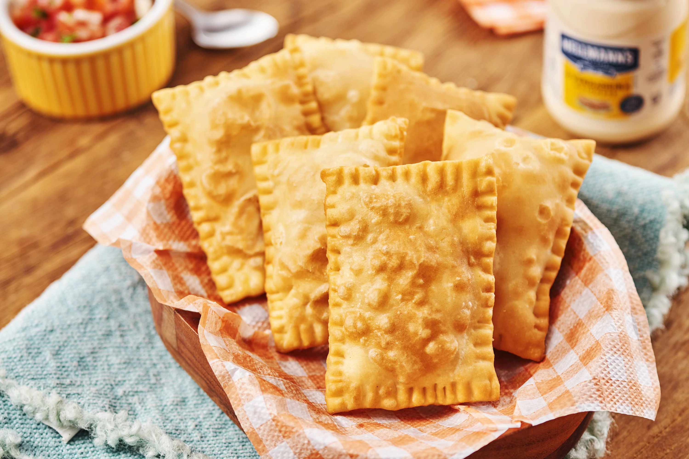

Odin Receitas

Descrição da Receita
Confira essa receita de de pastel de queijo com massa sequinha e crocante! (Sim, nós vamos fazer a massa também).
Ingredientes
- 3 gemas
- 3 colheres (sopa) de margarina
- 1 colher (chá) de sal
- 1 xícara (chá) de água fervente
- 2 xícaras (chá) de farinha de trigo, aproximadamente
- 300 g de mussarela ralada
- Óleo para fritar
Modo de preparo
- Em uma tigela, coloque as gemas, a margarina, o sal, a água e misture bem.
- Vá acrescentando aos poucos a farinha de trigo.
- Sove bem a massa até ficar macia e desgrudar das mãos.
- Abra com um rolo e corte em quadradinhos.
- Coloque o recheio, dobre a massa ao meio e aperte as bordas com um garfo.
- Frite em óleo bem quente por 10 minutos, ou até que doure por igual.
Confira também essas duas receitas:
Pastel de Queijo e Presunto
Pastel de Pizza
